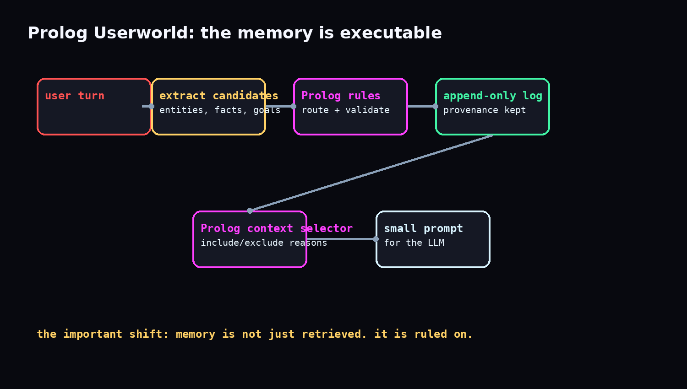
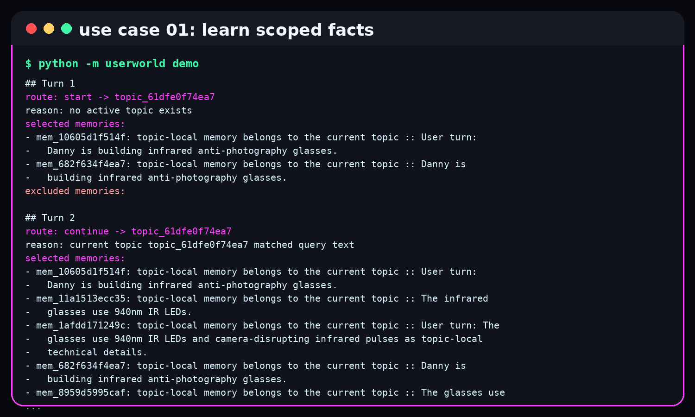
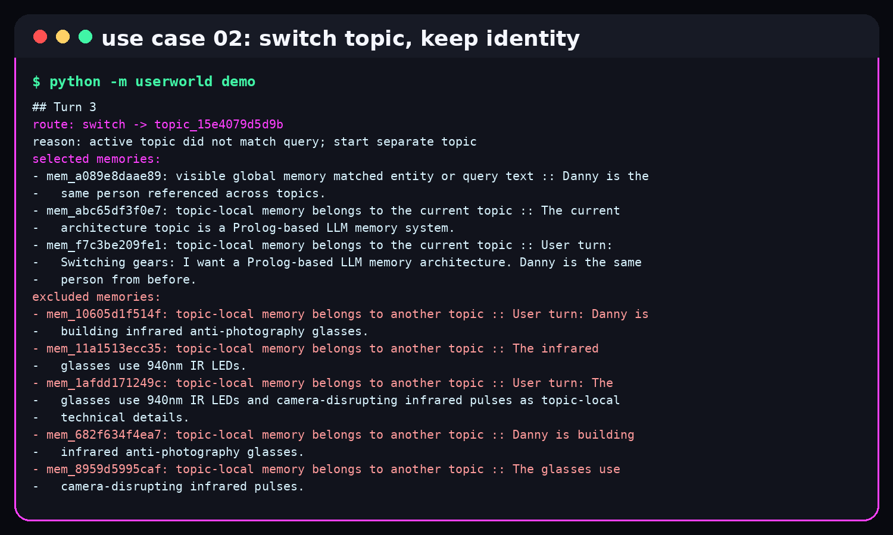
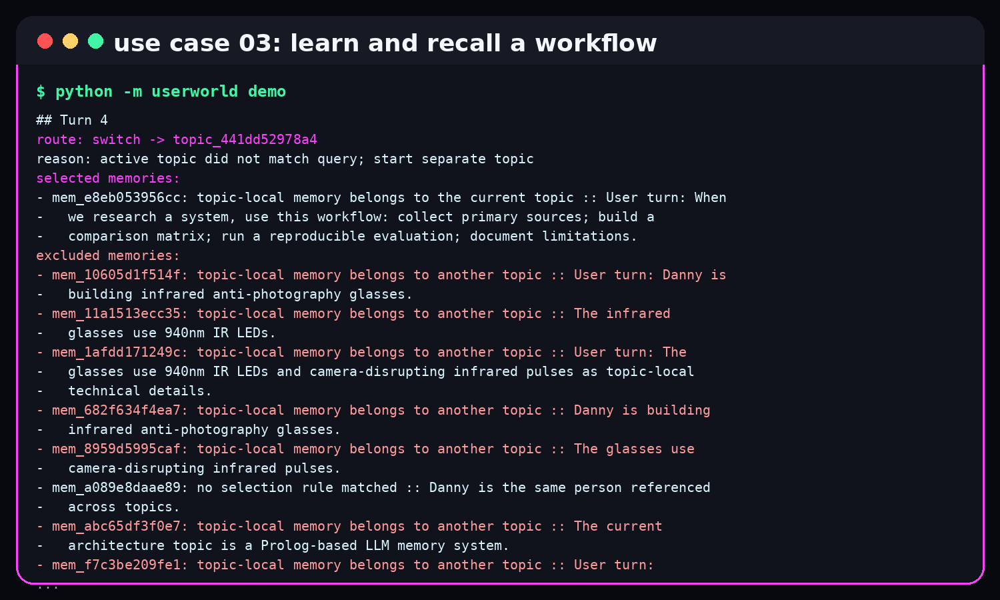
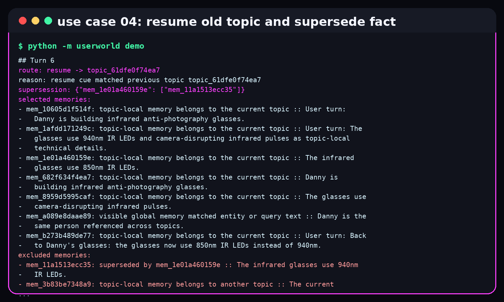
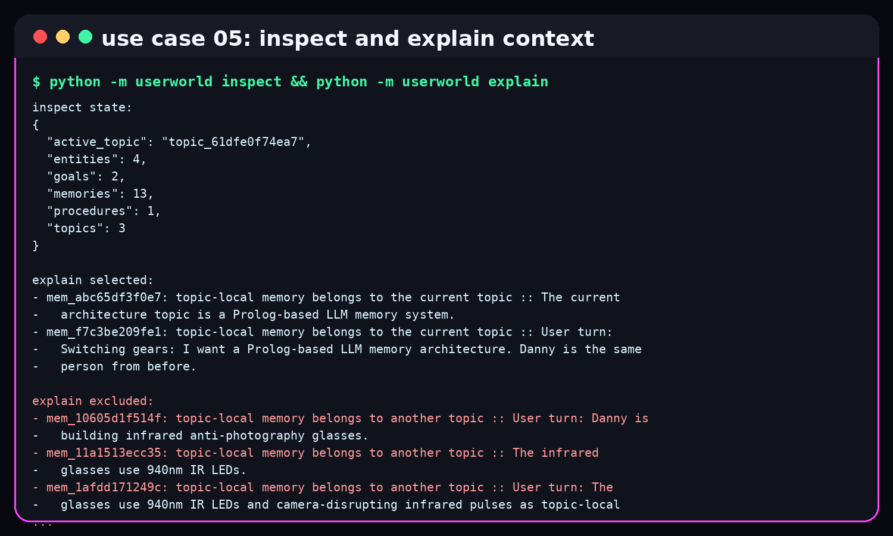
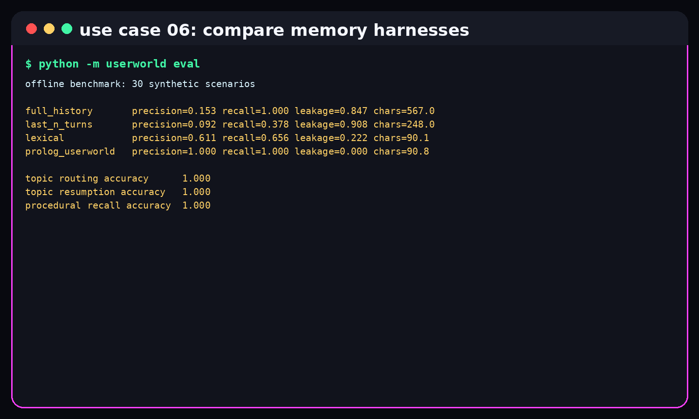

why this exists
my first serious ai work was not a neural network. it was prolog-era, rule-based expert-system work. in 2008 i published an itb thesis on a computer program for expert-system-based environmental impact analysis for cement industry projects. the archive still has the old title, the pdf chapters, and the keywords: amdal, program komputer, sistem pakar.
that era of ai was unfashionable. we wrote rules, asked structured questions, and tried to make machines reason through a domain the way a human expert would. then the industry ran through big data, cloud, blockchain, crypto, and finally language models. now we have the opposite problem: a model can speak beautifully, but it forgets why it said something, mixes old topics into new ones, and often cannot tell you why one memory entered the prompt while another stayed out.
prolog userworld is my attempt to bring a little of that old expert-system discipline into long-running llm conversations. the name is literal: a userworld is the world the system has built around one user, one set of projects, one running life of facts, goals, procedures, and half-finished threads.
the point is not nostalgia. the point is control. memory should not be a pile of chat logs plus vector search. memory should have rules, provenance, contradiction handling, scope, and the ability to explain itself.
what prolog is, in normal human language
prolog is a programming language from the old ai world. most languages tell the computer exactly what to do step by step. prolog lets you describe facts and rules, then ask questions.
instead of writing "loop through this list and check every item", you write something closer to "a memory is relevant if it belongs to the current topic, or if it is global and matches the entity we are talking about, and it has not been revoked or superseded." then prolog searches for the answers.
% tiny prolog example
person(danny).
project(danny, glasses).
project(danny, prolog_userworld).
same_person(X, Y) :-
person(X),
person(Y),
X = Y.
% query:
% ?- project(danny, What).
% What = glasses ;
% What = prolog_userworld.that makes prolog useful for things like expert systems, planning, legal-ish rules, medical triage, symbolic reasoning, and now, maybe, memory governance for ai agents. it is not magic. it is brittle if your facts are bad. but it is wonderfully explicit.
the architecture
the prototype is small: python receives the user turn, extracts candidate memories, then asks swi-prolog to make the actual decisions. prolog is the control plane. python is the plumbing.

the system stores:
- episodic memory: what happened in the conversation.
- semantic memory: facts about people, projects, preferences, and relationships.
- procedural memory: reusable workflows, triggers, steps, and completion conditions.
- working memory: the active topic, goal, entities, and constraints.
- temporal state: when a fact became valid, expired, or got superseded.
- provenance: where a memory came from.
- epistemic status: explicit user statement, observation, inference, hypothesis, or suggestion.
the memory file is an append-only event log. old facts are not deleted when they become wrong. they are superseded. that sounds boring until you need to answer, "what did i believe at the time?"
python -m userworld chat
python -m userworld demo
python -m userworld eval
python -m userworld inspect
python -m userworld explain --text "back to danny's glasses" --entity danny --entity glasses
python -m userworld resetthe prolog side has fixed predicates for the dangerous decisions. untrusted model output never becomes an arbitrary prolog goal. it becomes validated data.
% simplified from the prototype
memory_active(Id) :-
memory(Id, _, _, _, _, _, _, _, _, _, _, ValidUntil, SupersededBy, Revoked, _, _, _),
Revoked \== true,
noneish(SupersededBy),
noneish(ValidUntil).
memory_visible_for_topic(Id, CurrentTopic, QueryEntities, QueryText, include, Reason) :-
memory(Id, _, Subject, Predicate, Object, Topic, Scope, _, _, _, _, _, _, _, _, _, Text),
memory_active(Id),
Scope == topic,
Topic == CurrentTopic,
( token_overlap(QueryText, Text)
; token_overlap(QueryText, Subject)
; token_overlap(QueryText, Predicate)
; token_overlap(QueryText, Object)
),
Reason = 'topic-local memory belongs to the current topic'.six use cases
the demo uses a deliberately weird conversation because weird conversations expose memory bugs quickly. it starts with infrared anti-photography glasses, switches into llm memory architecture, learns a research workflow, then returns to the glasses and changes a technical fact.
1. learn topic-scoped facts
danny is building infrared anti-photography glasses. the system records the project and the technical details as topic-local facts, not universal truth.

2. switch topics without losing identity
when the conversation moves to prolog memory architecture, danny remains the same person, but the infrared details do not pollute the new prompt.

3. learn a reusable workflow
the user can teach a procedure: collect primary sources, build a comparison matrix, run evaluation, document limitations. later, a research request triggers that workflow.

4. resume an old topic and supersede a fact
"back to danny's glasses" resumes the glasses topic. the old 940nm led fact is not erased, but the new 850nm fact supersedes it.

5. inspect and explain
the system can report its current counts, active topic, selected memories, and excluded memories with reasons. this is the part i care about most: explainability should be a core feature, not a debug afterthought.

6. compare against simple memory baselines
the benchmark compares full history, last-n turns, lexical retrieval, and prolog userworld. this is a synthetic benchmark, so i treat it as a smoke test, not a victory lap.

how it compares with other memory harnesses
there is already a wave of memory systems for agents. i do not think prolog userworld replaces them all. i think it sits in a different corner: explicit rules over mutable personal reality.
| approach | what it is good at | where prolog userworld is different |
|---|---|---|
| full chat history | simple, complete, no retrieval logic. | bloats the prompt and drags irrelevant old topics into new work. |
| sliding window | cheap and predictable. | forgets old but important facts, especially after interruptions. |
| vector search / bm25 | good at semantic similarity and fast retrieval. | similarity is not the same as relevance, validity, scope, or authority. |
| langgraph memory | short-term state via checkpoints and long-term stores across sessions. | userworld focuses on a declarative rule layer that decides context inclusion and exclusion. |
| memgpt / letta | stateful agents that manage growing context and persistent memory. | userworld is smaller and more rigid: prolog predicates decide mutation, routing, and selection. |
| mem0 | developer-friendly persistent memory layer for apps and agents. | userworld is less productized, but more explicit about proof traces and contradiction rules. |
| zep / graphiti | temporal knowledge graphs with evolving entities and relationships. | userworld borrows the temporal instinct, but expresses control rules in prolog instead of graph retrieval alone. |
the closest philosophical cousin is probably a temporal knowledge graph plus a rule engine. the difference is that in prolog userworld, the rule engine is not glued on afterward. it is the main memory surface.
the benchmark, and why i do not overclaim it
the current benchmark has 30 synthetic scenarios covering abrupt topic switches, nested digressions, resuming old topics, shared entities, ambiguous references, contradictions, superseded facts, temporary instructions, procedural recall, multi-step goals, revoked information, topic-local facts, and globally available facts.
{
"scenario_count": 30,
"prolog_userworld": {
"precision": 1.000,
"recall": 1.000,
"leakage": 0.000
},
"topic_routing_accuracy": 1.000,
"topic_resumption_accuracy": 1.000,
"procedural_retrieval_accuracy": 1.000
}that looks clean because the scenarios were written to test the rule semantics directly. it proves the machine is doing what the rules say. it does not prove that the rules are perfect, or that this beats embeddings in the wild. the next step is a larger held-out benchmark with messy conversations written by someone other than me.
why this may become a thesis
the thesis question is simple: can a symbolic memory layer make long-running ai conversations more trustworthy?
to answer that properly, i would need to compare not just retrieval scores, but behavior: does the system avoid leaking stale topic details? does it preserve provenance? does it explain itself well enough for a human to audit? can it manage durable procedures without turning guesses into facts?
this prototype is a first brick. it runs on a phone, inside debian proot, with python and swi-prolog. that matters to me because powerful systems should not require a cloud stack just to think clearly.
replace the deterministic extractor with model-assisted extraction while keeping explicit status: user statement, observation, inference, hypothesis, suggestion.
build a messy, human-authored set of conversations with topic switches, reversals, privacy traps, and long interruptions.
try a resident prolog process so selection latency is no longer dominated by subprocess startup.
frame prolog userworld as executable declarative memory, not just retrieval, not just summarization, not just a tool call.
try it
the code is public. it installs with a normal python virtual environment and swi-prolog. no api key is needed for the offline demo or benchmark.
git clone https://github.com/Decentricity/prolog-userworld.git
cd prolog-userworld
python3 -m venv .venv
. .venv/bin/activate
python -m pip install -e ".[dev]"
python -m userworld demo
python -m userworld evalsources and adjacent work
personal background: decentricity homepage and itb digital library record for the 2008 expert-system work.
prolog reference: swi-prolog manual.
memory systems and related work: letta stateful agents, langgraph memory concepts, mem0, graphiti, memgpt, chatdb, prologmcp, logic-lm, and linc.